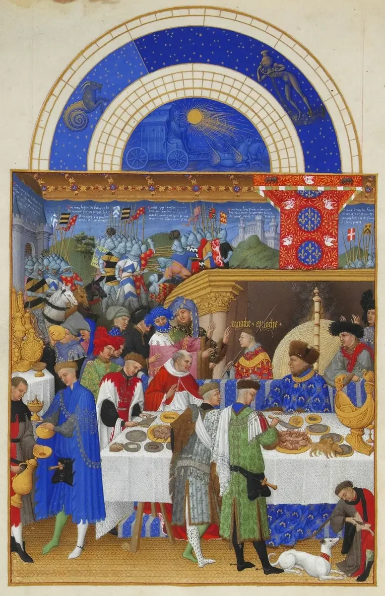
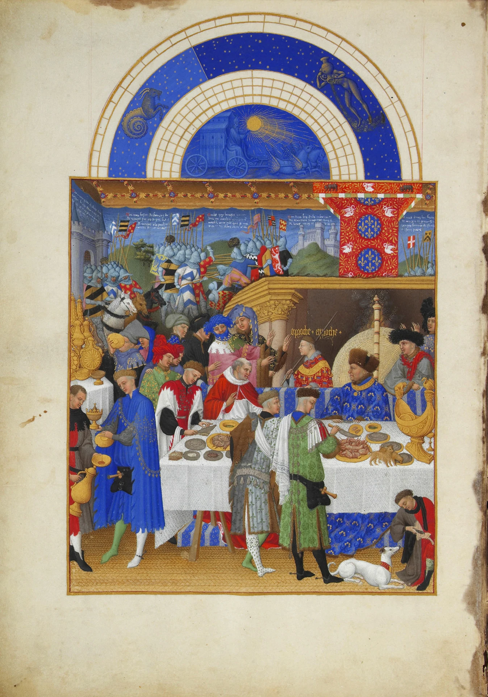
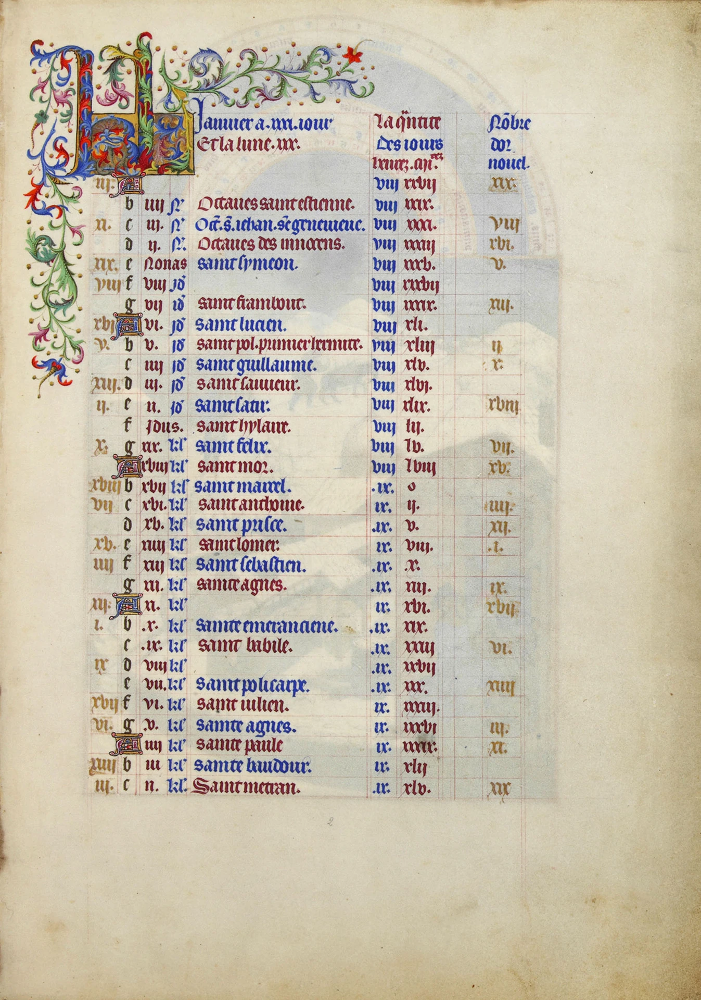
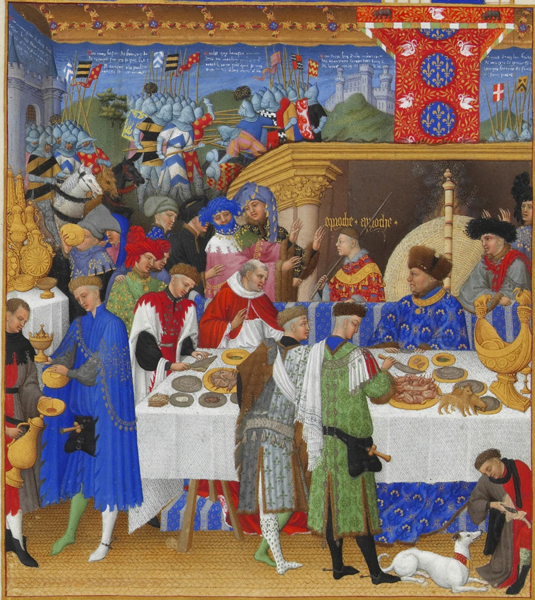

아직 펼치지 않은 카드책이 된 말씀 · 3베리 공의 기도서 · 1월기도서에 왜 잔치 그림이 들어 있을까요?기도하는 책에 맛있는 잔치 그림이 있어! 왜 그럴까?
1411~1416년 무렵 → 지금파리, 베리 공의 궁전 · 프랑스 샹티이 성
베리 공의 기도서 · 1월
600년 전 새해 첫날, 프랑스 베리 공작의 큰 방에서는 선물을 주고받는 잔치가 열렸어요. 그림 속 금빛 글씨가 손님을 불러요. “가까이, 가까이.” 손님이 되어 문 쪽에서 공작 앞까지 걸어가 보세요.
아주 옛날 새해 첫날, 파란 옷 공작 할아버지가 잔치를 열었어. 그림 속에서 누가 “가까이, 가까이!” 하고 불러. 우리도 손님이 되어 걸어가 볼까?
검수 전 시안이에요(기준서 1판 · 키트 3판). 그림 속 사람과 물건은 박물관과 해설서가 밝힌 대로 옮겼고, 해설마다 다른 것은 ‘기록마다 다른 점’에 적었어요. 상상은 ‘눈 감고 상상해 보기’에서만 해요.
시안 확인용카드 단계 미리 보기
1
펼친 두 쪽, 1월
앞면에서 본 1월 그림은 책을 펼쳤을 때 왼쪽 쪽(1v)이에요. 마주 보는 오른쪽 쪽(2r)에는 1월의 달력이 있어요. 날마다 기억하는 성인과 축일을 붉은 글씨와 파란 글씨로 번갈아 적었어요.
오른쪽 쪽을 자세히 보세요. 종이 뒤쪽에 그린 2월 그림, 눈 덮인 농가가 희미하게 비쳐요. 한 장을 넘기면 화려한 1월 잔치 다음에 농부들의 소박한 겨울이 나와요.


2월의 눈 풍경은 서양 그림에서 눈 덮인 풍경을 그린 가장 이른 예 가운데 하나로 꼽혀요.
공작은 세상을 떠날 때 기도서를 열다섯 권이나 가지고 있었어요. 그래서 재산 목록에는 책마다 이름을 붙여 구별했어요. ‘아름다운 기도서’, 그리고 이 책의 이름 ‘매우 호화로운 기도서’도 거기서 왔어요.
책을 펼치면 왼쪽엔 잔치 그림, 오른쪽엔 1월 달력이 있어. 달력 뒤로 2월의 눈 그림이 비쳐!
물어보기달력에 붉은 글씨와 파란 글씨가 번갈아 있어. 왜 색을 바꿔 가며 썼을까?
2
“가까이, 가까이”
새해 첫날, 파리에 있는 공작의 궁전이에요. 이날 공작과 손님들은 선물을 주고받았어요. 이 풍습을 ‘에트렌’이라고 불렀어요.
공작은 친구와 손님들이 다가오기를 기다리고 있어요. 이제 그림 속 큰 방으로 들어가 봐요.
손님이 되어 ‘다음 곳으로’를 눌러 보세요. 문 쪽 찬장에서 공작 앞까지 한 걸음씩 다가가요.

금 그릇 찬장벽의 태피스트리“가까이, 가까이”공작의 자리배 모양 금 그릇1월 그림의 큰 방 부분 · 랭부르 형제, 『베리 공의 매우 호화로운 기도서』 1v쪽 · 퍼블릭 도메인 · 위키미디어 공용(콩데 미술관 Ms. 65)
공작 앞까지 왔어요. 새해 첫날, 이 방에서 공작과 손님들은 선물을 주고받았어요.
메트로폴리탄 미술관에 따르면 새해 선물은 값진 물건이 오가는 중요한 길이었어요. 가장 귀한 선물은 값진 재료로 만든 것이었지만, 재치와 솜씨도 반겼어요. 랭부르 형제는 나무토막을 호화로운 책처럼 꾸민 ‘가짜 책’을 공작에게 선물한 적이 있어요.
이 새해 잔치의 손님이라면, 공작에게 무엇을 선물할까요?
새해 잔치에 손님이 잔뜩 왔어. 누가 “가까이, 가까이!” 하고 부르고 있대.
물어보기공작 할아버지 앞에 가면 뭐라고 새해 인사를 할까?
3
작은 상자 속 묶음들
1416년, 랭부르 형제가 세상을 떠났고 6월 15일에는 공작도 세상을 떠났어요. 공작의 물건을 하나하나 적고 값을 매긴 재산 목록이 만들어졌어요.
그 목록에 이 책은 아직 제본도 하지 않은 여러 묶음으로 적혀 있어요.
“작은 상자 하나에, 폴과 그 형제들이 만들던 아주 호화로운 기도서의 여러 묶음. 아주 호화롭게 그림을 그리고 채색함. 500리브르.”
베리 공의 재산 목록(1416) · 몰레이로 해설서에 실린 옛 프랑스어(… que faisoient Pol et ses frères …)를 이 안내서가 옮김
‘만들던’이라는 말에 일이 멈춘 그때가 남아 있어요. 그리고 이 목록에 적힌 말 ‘très riches heures(아주 호화로운 기도서)’가 지금 이 책의 이름이 되었어요.
책을 만들던 형제들도, 공작 할아버지도 세상을 떠났어. 그림 책은 상자 속 묶음으로 남았대.
물어보기다 못 만든 책은 그 뒤에 어떻게 됐을까?
4
샹티이 성에 잠든 책
그 뒤 이 책은 여러 주인의 손을 거쳤어요. 1856년 이탈리아 제노바의 한 여학교에서 다시 나타났고, 프랑스의 수집가 오말 공작이 사들였어요.
오말 공작은 샹티이 성과 소장품을 모두 프랑스 학사원에 남겼어요. 그때 붙인 조건 때문에 이 책은 샹티이 밖에서 전시할 수 없어요.

2025년에는 복원을 위해 책을 풀어 놓은 김에, 열두 달 그림을 한 장씩 따로 전시했어요. 미술관은 다시 묶기 전 일생에 한 번뿐인 기회라고 했어요.
이 책은 지금 프랑스의 큰 성 안에 있어. 너무 소중해서 성 밖으로는 안 나간대.
물어보기정말 소중한 물건을 오래 지키려면 어떻게 해야 할까?
눈 감고 상상해 보기
새해 첫날 아침, 큰 방에 장작불이 타올라요. 바깥 추위에 언 손님들이 손을 내밀어 불을 쬐어요. 금 그릇이 부딪치는 소리, 고기를 써는 칼 소리, 식탁 위를 기웃거리는 작은 개들. 지팡이를 든 사람이 손님들을 불러요. “가까이, 가까이.”
눈을 감아 봐. 큰 방에 불이 활활 타. 고기 냄새가 나고, 식탁 위에서 강아지가 기웃거려. 누군가 불러. “가까이, 가까이!”
나의 자리
처음 본 1월 그림을 다시 보세요. 지팡이를 든 사람 머리 위, 금빛 “가까이, 가까이”가 보이나요?
그림 속 큰 방에서, 나는 누구 곁에 서 있고 싶나요? 그 사람에게 무엇을 건네고 싶나요?
그림 속에서 누구 옆에 서 있고 싶어? 강아지 옆? 공작 할아버지 옆?
마음에 닿는 한 줄을 고르거나 직접 써 보세요. 한 줄을 남기면 이 자리의 도장이 찍혀요. 이 기기에만 저장돼요.
더 깊이
궁금한 칸만 펼쳐 읽어도 괜찮아요.
알고 보면
새해 선물, 에트렌 새해 첫날 선물을 주고받는 풍습은 값진 물건이 사람들 사이를 오가는 중요한 길이었어요. 공작이 모은 보물 가운데에도 이렇게 들어온 것이 많아요.
열일곱 채의 성 공작은 성과 저택을 열일곱 채나 짓거나 고쳤어요. 그래도 그의 이름을 가장 널리 남긴 것은 책이에요.
야누스의 자리 한 해설은 이 그림 속 공작이 두 얼굴을 가진 로마의 신 야누스의 자리를 차지했다고 봐요.
눈 위의 발자국 2월 그림에는 눈 위에 찍힌 발자국까지 그려져 있어요.
기록마다 다른 점
어느 해의 새해? 1413년 1월 1일 파리 궁전의 잔치로 보는 해설이 있고, 1414년 아라스 조약 뒤 아르마냐크파와 부르고뉴파를 화해시키려고 연 1415년 1월 1일 잔치로 보는 해설도 있어요.
“가까이, 가까이”는 누구의 말? 글씨가 지팡이를 든 사람 머리 위에 있어 그를 손님을 맞는 시종으로 보는 해설이 많아요. 공작이 친구들에게 다가오라고 하는 장면으로 읽는 해설도 있어요.
공작 곁의 성직자 붉은 옷의 성직자를 공작의 재무관이자 샤르트르 주교였던 마르탱 구주로 보는 해설이 있지만, 확실하지는 않아요.
누가 무엇을 그렸나 1월 그림은 랭부르 형제의 솜씨로 봐요. 책의 다른 달에는 1440년대의 화가(바르텔레미 데이크로 보기도 하지만 근거는 적어요)와 1480년대 장 콜롱브의 손도 섞여 있어요.
직접 가 보기
확인한 날 · 2026년 11월 18일 · 바뀌기 쉬운 정보라 정기적으로 다시 확인해요
진품은 프랑스 샹티이 성의 콩데 미술관에 있어요. 오말 공작의 유언 조건 때문에 샹티이 밖으로 나가지 않고, 진품을 보여 주는 때도 아주 드물어요.
2025년 10월 5일까지 열린 전시처럼 진품을 보여 주는 때가 오면 미술관이 알려요. 가기 전에 미술관 누리집에서 전시를 꼭 확인해요.
공작 앞까지 금박
문 쪽에서 공작 앞까지, 그림 속 다섯 곳을 차례로 다 지나가면 카드에 금박이 입혀져요.
찬장 → 태피스트리 → “가까이, 가까이” → 공작 → 배 모양 금 그릇
새해 선물 채색
둘 가운데 하나만 해도 카드가 채색돼요.
잔치 손님이 되어 공작에게 줄 선물 고르기
아이와 함께 ‘영화처럼 보기’를 끝까지 보기
근거 보기 (11)
- 메트로폴리탄 미술관 에세이: 베리 공(1340~1416)의 후원 — 왕의 아들·동생·삼촌, 성 열일곱 채, 작고 값진 세공품, 책이 가장 큰 이름, 새해 선물(에트렌), 랭부르 형제의 가짜 책, 1416년 목록의 금은 세공품 300점 넘게, 1405년 『아름다운 기도서』 주문·이름은 재산 목록에서, 기도서 열다섯 권
- 메트로폴리탄 미술관 Heilbrunn 에세이(옛 주소) — 에트렌은 값진 물건이 오가는 중요한 길, 나무토막을 호화로운 책처럼 꾸민 가짜 책, 2월은 2v쪽
- 샹티이 성(구글 아트 앤 컬처) — 1월은 새해 선물 잔치, 공작은 불을 등진 윗자리·두꺼운 파란 옷·곰 털모자(그의 상징 동물), 2월은 서양 그림에서 눈 풍경을 그린 이른 예, 농부의 소박한 삶
- 필립 매쿠아트, Art in Society — 1413년 1월 1일 파리 궁전(하겐), ‘approche approche’ 금빛 글씨와 시종, 트로이 전쟁 태피스트리, 버드나무 불막이 가리개, 마르탱 구주, 네프의 백조와 곰(부에트너), 식탁 위 작은 개, 찬장의 금 그릇, 불을 쬐는 손님, 천막의 백조와 곰
- Musée virtuel du vin — 1415년 1월 1일 잔치(아라스 조약 뒤 화해) 가설, 공작은 다가오기를 기다림, ‘Approche Approche’, 식탁 위 작은 개, 트로이 전쟁 태피스트리, 야누스의 자리, 1485~1489년 장 콜롱브
- 몰레이로(샹티이 성 허가 영인본 해설) — 1416년 6월 15일 공작 죽음, 재산 목록 원문 ‘En une layette plusieurs cayers d’unes très riches heures que faisoient Pol et ses frères … 500 livres’, 묶지 않은 채
- 디 아트 뉴스페이퍼(2025-06-09) — 1856년부터 샹티이, 오말 공작의 유증 조건으로 샹티이 밖 전시 금지, 수십 년 공개 안 함, 복원 때 떼어 낸 열두 달 그림을 따로 전시, 다시 묶기 전 일생에 한 번의 기회
- 아폴로 매거진 — 1856년 제노바의 여학교에서 나타나 오말 공작이 삼, 프랑스 학사원에 남김, 바르텔레미 데이크(근거 적음)·장 콜롱브, 2025년 복원 중 풀어 따로 전시, 2월의 눈 위 발자국
- Les Enluminures(TEXTMANUSCRIPTS): 프랑스 기도서 달력 — 축일을 붉은 글씨와 파란 글씨로 번갈아 적는 관습
- 위키미디어 공용: 1v쪽(1월 그림)·2r쪽(1월 달력) 파일 정보(Ms. 65 쪽 번호)
- Wikipedia: Très Riches Heures du Duc de Berry(길잡이) — 1416년 목록이 열다섯 권과 구별하려 붙인 이름
그림·사진·소리 출처
‘처음 만나는 기독교 문화’의 깊은 카드예요. 실제 인물의 사진은 쓰지 않았어요. 카드 단계와 남긴 글은 이 기기에만 저장돼요.